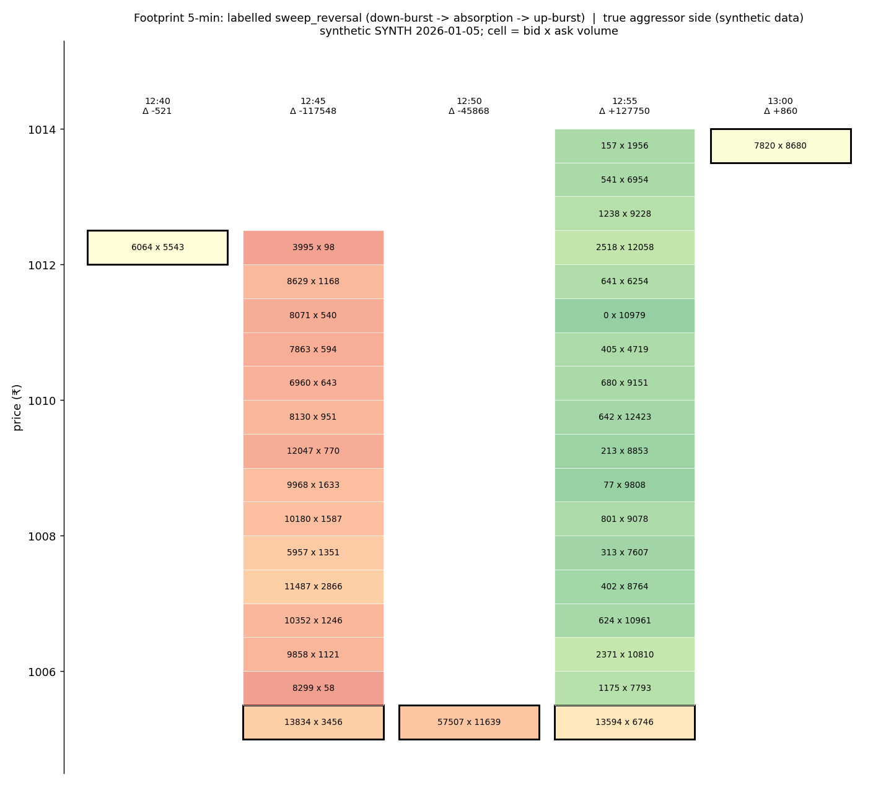

Order flow from first principles
orderflow-engine, Phase 1 study notes (concepts A and B). Companion to ict-swing-engine.
_est.1. Auction market theory
Price advertises, time regulates, volume validates.
Definition
A market is an auction that looks for the price where both sides are willing to trade. Balance: price rotates in a range, both sides trade, volume is two-sided. Imbalance: one side dominates and price moves to find new counterparties. Initiative activity pushes price away from value (buyers lifting offers at highs). Responsive activity pushes it back (buyers stepping in below value).
Why it matters
It tells you what question to ask of every chart: is this move accepted (time and volume build there) or rejected (price returns fast)?
How to read it
- Price moves with little volume and quick return: advertised, not validated.
- Price holds and volume builds at a new level: accepted, new value.
- One-sided trade (almost all volume on one aggressor side) is an imbalance; two-sided trade is balance.
Common mistakes
- Calling every breakout "initiative" without checking volume or time spent beyond the old range.
- Treating balance as dead: most sessions are balance.
2. The order book (DOM, Level 2)
Definition
The list of resting limit orders: bids (buyers waiting) below, asks (sellers waiting) above. The spread is best ask minus best bid. Depth is the size resting at each level (NSE feeds typically give the best 5 levels; some give 20). Orders at one price fill in price-time priority: earlier orders first.
Why it matters
Resting size is the liquidity price must chew through. Queue position decides whether your limit order gets filled when price only touches your level.
Common mistakes
- Trusting displayed size: NSE disclosed quantity orders show only part of the order, so true size can be larger.
- Assuming the book is the whole story: orders can be cancelled in microseconds.
0.05 in config.yaml is a synthetic/test fallback only.3. Limit orders vs market orders
Limit orders are passive: they rest in the book and provide liquidity. Market orders are aggressive: they trade immediately and take liquidity. A trade happens only when an aggressor meets a resting order.
How to read it
Every print has one aggressor and one passive side. "Volume" alone cannot say who was in a hurry; the aggressor side can.
Common mistakes
- "Buyers and sellers are always equal, so volume is neutral." True in count of shares, false about urgency: that is exactly what delta measures (Phase 2).
4. Aggressor side
A market buy lifts the offer (trade at the ask, side = +1). A market sell hits the bid (trade at the bid, side = -1). This one label is the base of delta, CVD, footprint and imbalance.
side = +1 -> counted in ask_vol (buyer was aggressive) side = -1 -> counted in bid_vol (seller was aggressive) delta = ask_vol - bid_vol
_est suffix.5. Slippage and market impact (try it)
Send a market order into an illustrative ladder (tick = ₹0.05). Bigger orders walk the book and pay more.
| Price | Size | Side |
|---|
shares
Why it matters
Average fill price = Σ(price × size) ÷ Σ size. Slippage = average fill − the price you saw. Costs in config.yaml include slippage_ticks for exactly this.
Common mistakes
- Backtesting at the last price: a market order never fills at the last price for free.
- Ignoring that the book refills or thins as you trade; this ladder is static.
6. Time & Sales (the tape)
The tape is the list of trades: time, price, size (and aggressor side when known). Read for large prints, bursts (many trades in seconds) and speed.
ts price qty side_true bid ask 2026-01-05 09:15:03 1000.05 47 +1 1000.00 1000.05 <- illustrative row
Common mistakes
- Reading one big print as "an institution". It may be a block crossed between two parties or one order split on both sides.
7. Classifying trades without exchange flags
The three rules (all causal: only past and present data)
- Tick rule: price up vs previous trade = buy, down = sell, unchanged = copy the last direction.
- Quote rule: at or above the ask = buy, at or below the bid = sell, inside the spread compare to the midpoint, exactly mid = unclassified.
- Lee–Ready: quote rule first, tick rule for what it cannot decide.
Measured error on the synthetic day (17,014 trades, seed 42)
| method | coverage | accuracy (labelled) | accuracy (volume-weighted) |
|---|---|---|---|
| tick_rule | 99.99% | 92.28% | 93.61% |
| quote_rule | 99.93% | 99.34% | 99.47% |
| lee_ready | 100.00% | 99.33% | 99.53% |
Common mistakes
- Treating estimated delta as exact. A 1% label error is small on one trade but can flip the sign of a quiet bar's delta.
- Using the quote of after the trade: that is lookahead. The tests check that classifying a prefix gives the same labels as classifying the whole day.
8. Bar-level estimate from OHLCV
When only candles exist (e.g. Yahoo): delta_est = volume × (2·close − high − low) / (high − low). It assumes volume splits by where the close sits in the bar's range.
Why it is crude
- A bar that dips then closes at the high gets "all buying" even if sellers dominated the dip.
- It cannot see inside the bar, so absorption (heavy volume, no progress) is invisible: range is small, so the ratio is unstable.
- Zero-range bars divide by zero and must be skipped.
delta_est. This is the free-data fallback, not the real thing.Footprint demo (synthetic, labelled sweep)
Each cell is bid × ask volume at that price, 5-minute bars, true aggressor side from the generator. Black box = highest-volume row.

How to read it
- 12:45 bar: sellers aggress at every price on the way down (red cells, Δ strongly negative).
- 12:50 bar: at the low, a huge bid-side volume and no further price progress: absorption, passive buyers soak up the selling.
- 12:55 bar: buyers take over and the price returns up: the reversal.
This is a planted event in synthetic data, so detecting it proves the machinery, not that real markets behave this way.
Coming next
Phase 2: delta, CVD and divergence, footprint analytics (POC, value area, imbalances), volume profile, TPO, VWAP. Then book analytics, EOD swing flow, live recorder, setups and backtests with honest results, ICT bridge, Pine indicator.